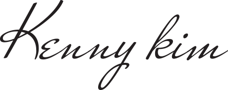

Design × Managing × AI
디자인을 출발점으로한 다양한 경험이
결과로 연결합니다.
Hands-on Leadership
디자이너로 출발해 기획, UI/UX, 퍼블리싱, 프론트엔드, PM/PL, 글로벌 협업, AI/AX 실행까지 역할을 확장해온 실무형 리더입니다. 단순히 업무를 연결하는 데 그치지 않고, 직접 구조를 설계하고 산출물을 만들며 팀과 프로젝트를 끝까지 완성하는 방식이 강점입니다.

-
Design Thinking
사용자 경험과 비즈니스 구조를 함께 읽고 화면으로 구체화하는 설계력
-
Execution Managing
일정, 품질, 이해관계자, 협업 흐름을 직접 통제하는 프로젝트 운영력
-
AI-Ready Workflow
AI와 AX를 도입이 아닌 실제 생산성과 결과로 전환하는 실행 방식
Core ValueDesign driven,
Managing focused, and AI accelerated.
-
Design
사용자 흐름, 정보구조, 인터랙션, 브랜드 톤까지 실제 서비스 수준으로 구체화하는 디자인 역량을 갖추고 있습니다.
-
Managing
실제 에이젼트 운영을 한 대표 경험을 바탕으로 PM/PL, 글로벌 인력 관리, 문서화, QA, 협업 구조 정리까지 복잡한 프로젝트를 끝까지 이끄는 운영 경험이 강점입니다.
-
AI
AI를 보여주기 위한 기능이 아니라 생산성, 품질, 커뮤니케이션을 개선하는 AX 에이젼트 구축 및 실무 방식으로 연결해 결과를 만듭니다.
History
History


- 2003 - 2011
-
2003.02 ~ 2005.12
마레제백화점 온·오프라인 마케팅 제작 운영
-
2004.11 ~ 2005.10
호주 기반 웹 프로젝트 및 글로벌 커뮤니케이션 경험
-
2005.00 ~ 2008.00
웹 리뉴얼 및 공공 예술기관 유지보수
-
2006.01 ~ 2009.10
팀보이스 2.0 UI/API 기획 및 Web 2.0 서비스 설계
-
2009.11 ~ 2011.12
토그 소셜 플랫폼 기획·디자인
-
2011.12
직방 앱 기획 및 UI/UX 디자인
- 2012 - 2017
-
-
2011.12 ~ 2013.03
대형 프로젝트 PM 및 디자인 조직 운영
-
2013.03 ~ 2018.10
Wemeet / RZA 설립 및 프로젝트 총괄 운영
-
2014.01 ~ 2014.08
대한민국 광고대상 수상 프로젝트 수행
-
2014.03 ~ 2016.08
대한민국 청와대 전체 온라인 구축 및 운영
-
2014.12 ~ 2015.10
KBS 역사포털 및 ‘나는 대한민국’ 캠페인 구축
-
2015.01 ~ 2020.10
BMW MINI 온라인 연간 유지보수 및 Stay Open 프로모션
-
2015.04 ~ 2017.12
메트라이프, 게토레이, 콜롬비아, 선차 프로젝트 구축 및 운영
- 2018 - 2021
-
-
2018.11 ~ 2019.06
복지부 내부시스템 태블릿 구축 및 Metlife 360 프로모션
-
2018.04 ~ 2020.02
Lawfully Online Service WEB / APP 구축 및 운영 유지보수
-
2019.12 ~ 2020.05
콘텐츠진흥원 캐릭터DB포털 디자인 및 구축
-
2016.03 ~ 2021.03
청년희망재단 WEB / Mobile 서비스 구축 및 유지보수
-
2018.01 ~ 2021.12
Ihoa 화장품 온라인 마케팅 및 운영 유지보수
-
2021.02 ~ 2021.12
글로벌 브랜드 포털 리뉴얼 및 운영 체계 구축 시작
- 2022 - Present
-
-
2021.02 ~ 2026.02
Keymedia 글로벌 브랜드 포털 리뉴얼 및 운영
-
2021.10 ~ 2022.05
디자인진흥원 내부 PMS 개편
-
2022.05 ~ 2022.08
용산 ITV WEB renewal
-
2022.12 ~ 2023.04
원유니버스 MSM teaser Site
-
2023.01 ~ 2023.05
Minkolabs Smart sound WEB
-
2023.09 ~ 2023.12
Minkonet autobahn 구축
-
2023.12 ~ 2024.02
KCC main renewal Design
-
2024.03 ~ 2024.11
SK 내부 영상회의 시스템 Web portal - together
-
2024.06 ~ 2024.09
Jns factory hereforyou APP 구축
-
2024.06 ~ 2024.12
국립국제교육원 국외인적자원관리시스템 WEB Renewal
-
2024.09 ~ 2025.02
SK telecom Btv GameGrid web / TV platform
-
2024.10 ~ 2025.04
Wonderful Indonesia 인도네시아 관광청 Mobile APP 구축
-
2025.05 ~ 2025.07
Berrylink / Helvesko Korea BX, 운영 및 구축
-
2025.10 ~ 2026.02
InvestmentNews, Wealth Professional Canada, COS, The Educator 운영 고도화
-
2026.03
(주)으뜸피엔디 Print 전용 온라인쇼핑몰 구축 총괄